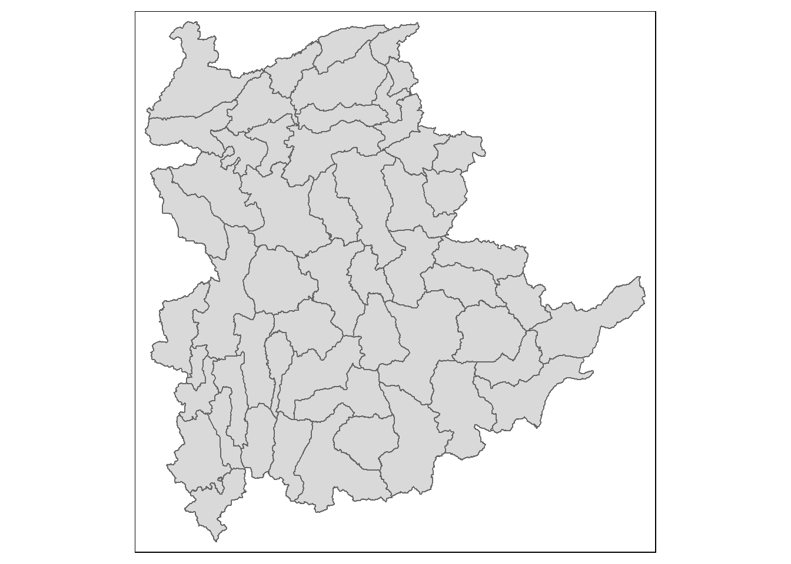
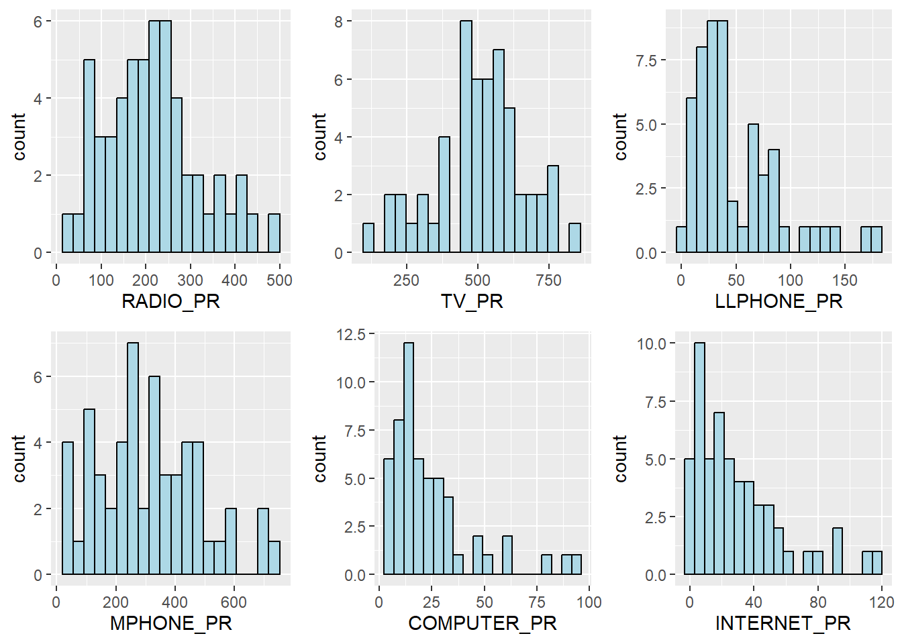
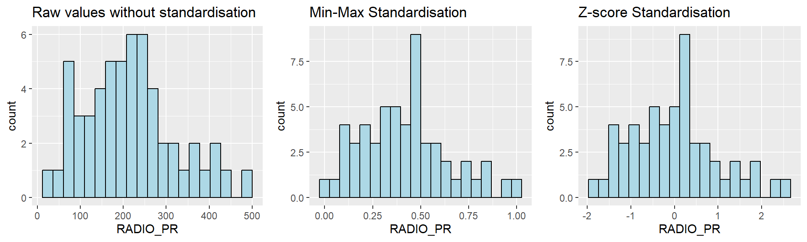
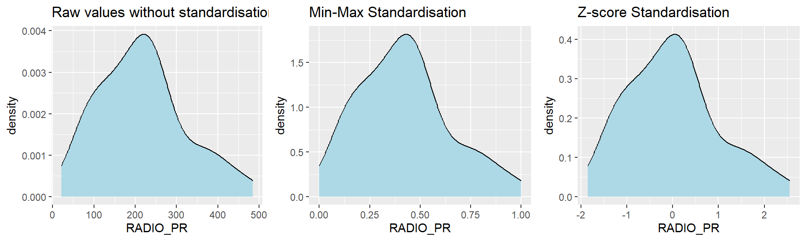
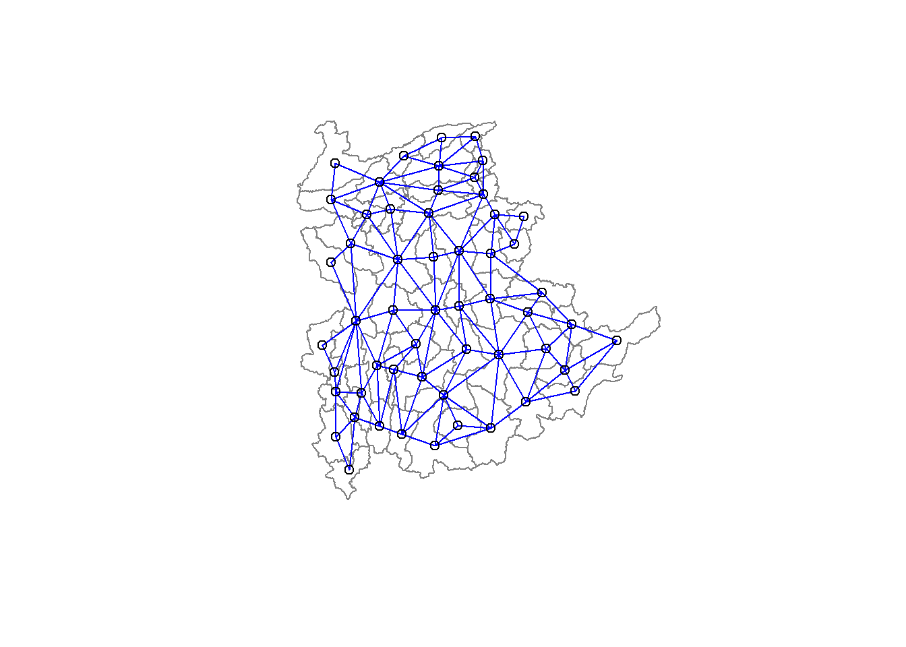

# GDAL is not in CRAN anymore. We are now using the `sp` package.
pacman::p_load(spdep, sp, tmap, sf, ClustGeo, ggpubr, cluster, factoextra, NbClust, heatmaply, corrplot, psych, tidyverse, GGally)In-class Exercise 6:
Load Packages
The Data
shan_ict <- read_csv('data/aspatial/Shan-ICT.csv')
shan_ict# A tibble: 55 × 11
`District Pcode` `District Name` `Township Pcode` `Township Name`
<chr> <chr> <chr> <chr>
1 MMR014D001 Taunggyi MMR014001 Taunggyi
2 MMR014D001 Taunggyi MMR014002 Nyaungshwe
3 MMR014D001 Taunggyi MMR014003 Hopong
4 MMR014D001 Taunggyi MMR014004 Hsihseng
5 MMR014D001 Taunggyi MMR014005 Kalaw
6 MMR014D001 Taunggyi MMR014006 Pindaya
7 MMR014D001 Taunggyi MMR014007 Ywangan
8 MMR014D001 Taunggyi MMR014008 Lawksawk
9 MMR014D001 Taunggyi MMR014009 Pinlaung
10 MMR014D001 Taunggyi MMR014010 Pekon
# ℹ 45 more rows
# ℹ 7 more variables: `Total households` <dbl>, Radio <dbl>, Television <dbl>,
# `Land line phone` <dbl>, `Mobile phone` <dbl>, Computer <dbl>,
# `Internet at home` <dbl>shan <- st_read(dsn = 'data/geospatial', layer = 'myanmar_township_boundaries') |>
filter(ST %in% c("Shan (East)", "Shan (North)", "Shan (South)")) |> # filter only to Shan Province
select(2:7) # select only the columns we needReading layer `myanmar_township_boundaries' from data source
`C:\SMU\Y3T2\IS415 Geospatial Analytics and Applications\IS415-GAA\In-class_Ex\In-class_Ex06\data\geospatial'
using driver `ESRI Shapefile'
Simple feature collection with 330 features and 14 fields
Geometry type: MULTIPOLYGON
Dimension: XY
Bounding box: xmin: 92.17275 ymin: 9.671252 xmax: 101.1699 ymax: 28.54554
Geodetic CRS: WGS 84# checking crs is irrelevant because we are building graphs
qtm(shan)
shan_sf <- readRDS('data/rds/shan_sf.rds')
glimpse(shan_sf)Rows: 55
Columns: 119
$ ST <chr> "Shan (North)", "Shan (South)", "Shan (South)", "S…
$ ST_PCODE <chr> "MMR015", "MMR014", "MMR014", "MMR014", "MMR015", …
$ DT.x <chr> "Mongmit", "Taunggyi", "Taunggyi", "Taunggyi", "Mo…
$ DT_PCODE.x <chr> "MMR015D008", "MMR014D001", "MMR014D001", "MMR014D…
$ TS.x <chr> "Mongmit", "Pindaya", "Ywangan", "Pinlaung", "Mabe…
$ TS_PCODE <chr> "MMR015017", "MMR014006", "MMR014007", "MMR014009"…
$ DT_PCODE.y <chr> "MMR015D003", "MMR014D001", "MMR014D001", "MMR014D…
$ DT.y <chr> "Kyaukme", "Taunggyi", "Taunggyi", "Taunggyi", "Ky…
$ TS.y <chr> "Mongmit", "Pindaya", "Ywangan", "Pinlaung", "Mabe…
$ TT_HOUSEHOLDS.x <dbl> 13652, 17544, 18348, 25504, 8632, 41341, 20084, 25…
$ RADIO.x <dbl> 3907, 7324, 8890, 5908, 3880, 11607, 6399, 10048, …
$ TV.x <dbl> 7565, 8862, 4781, 13816, 6117, 25285, 10762, 16353…
$ LLPHONE.x <dbl> 482, 348, 219, 728, 628, 1739, 800, 818, 1239, 112…
$ MPHONE.x <dbl> 3559, 2849, 2207, 6363, 3389, 16900, 4315, 8321, 1…
$ COMPUTER.x <dbl> 166, 226, 81, 351, 142, 1225, 381, 565, 508, 878, …
$ INTERNET.x <dbl> 321, 136, 152, 737, 165, 1741, 316, 556, 1216, 936…
$ RADIO_PR.x <dbl> 286.18517, 417.46466, 484.52147, 231.64994, 449.49…
$ TV_PR.x <dbl> 554.1313, 505.1300, 260.5734, 541.7189, 708.6423, …
$ LLPHONE_PR.x <dbl> 35.306182, 19.835841, 11.935906, 28.544542, 72.752…
$ MPHONE_PR.x <dbl> 260.69440, 162.39170, 120.28559, 249.49028, 392.60…
$ COMPUTER_PR.x <dbl> 12.159391, 12.881897, 4.414650, 13.762547, 16.4504…
$ INTERNET_PR.x <dbl> 23.513038, 7.751938, 8.284282, 28.897428, 19.11492…
$ DT_PCODE.x.x <chr> "MMR015D003", "MMR014D001", "MMR014D001", "MMR014D…
$ DT.x.x <chr> "Kyaukme", "Taunggyi", "Taunggyi", "Taunggyi", "Ky…
$ TS.x.x <chr> "Mongmit", "Pindaya", "Ywangan", "Pinlaung", "Mabe…
$ TT_HOUSEHOLDS.y <dbl> 13652, 17544, 18348, 25504, 8632, 41341, 20084, 25…
$ RADIO.y <dbl> 3907, 7324, 8890, 5908, 3880, 11607, 6399, 10048, …
$ TV.y <dbl> 7565, 8862, 4781, 13816, 6117, 25285, 10762, 16353…
$ LLPHONE.y <dbl> 482, 348, 219, 728, 628, 1739, 800, 818, 1239, 112…
$ MPHONE.y <dbl> 3559, 2849, 2207, 6363, 3389, 16900, 4315, 8321, 1…
$ COMPUTER.y <dbl> 166, 226, 81, 351, 142, 1225, 381, 565, 508, 878, …
$ INTERNET.y <dbl> 321, 136, 152, 737, 165, 1741, 316, 556, 1216, 936…
$ RADIO_PR.y <dbl> 286.18517, 417.46466, 484.52147, 231.64994, 449.49…
$ TV_PR.y <dbl> 554.1313, 505.1300, 260.5734, 541.7189, 708.6423, …
$ LLPHONE_PR.y <dbl> 35.306182, 19.835841, 11.935906, 28.544542, 72.752…
$ MPHONE_PR.y <dbl> 260.69440, 162.39170, 120.28559, 249.49028, 392.60…
$ COMPUTER_PR.y <dbl> 12.159391, 12.881897, 4.414650, 13.762547, 16.4504…
$ INTERNET_PR.y <dbl> 23.513038, 7.751938, 8.284282, 28.897428, 19.11492…
$ DT_PCODE.y.y <chr> "MMR015D003", "MMR014D001", "MMR014D001", "MMR014D…
$ DT.y.y <chr> "Kyaukme", "Taunggyi", "Taunggyi", "Taunggyi", "Ky…
$ TS.y.y <chr> "Mongmit", "Pindaya", "Ywangan", "Pinlaung", "Mabe…
$ TT_HOUSEHOLDS.x.x <dbl> 13652, 17544, 18348, 25504, 8632, 41341, 20084, 25…
$ RADIO.x.x <dbl> 3907, 7324, 8890, 5908, 3880, 11607, 6399, 10048, …
$ TV.x.x <dbl> 7565, 8862, 4781, 13816, 6117, 25285, 10762, 16353…
$ LLPHONE.x.x <dbl> 482, 348, 219, 728, 628, 1739, 800, 818, 1239, 112…
$ MPHONE.x.x <dbl> 3559, 2849, 2207, 6363, 3389, 16900, 4315, 8321, 1…
$ COMPUTER.x.x <dbl> 166, 226, 81, 351, 142, 1225, 381, 565, 508, 878, …
$ INTERNET.x.x <dbl> 321, 136, 152, 737, 165, 1741, 316, 556, 1216, 936…
$ RADIO_PR.x.x <dbl> 286.18517, 417.46466, 484.52147, 231.64994, 449.49…
$ TV_PR.x.x <dbl> 554.1313, 505.1300, 260.5734, 541.7189, 708.6423, …
$ LLPHONE_PR.x.x <dbl> 35.306182, 19.835841, 11.935906, 28.544542, 72.752…
$ MPHONE_PR.x.x <dbl> 260.69440, 162.39170, 120.28559, 249.49028, 392.60…
$ COMPUTER_PR.x.x <dbl> 12.159391, 12.881897, 4.414650, 13.762547, 16.4504…
$ INTERNET_PR.x.x <dbl> 23.513038, 7.751938, 8.284282, 28.897428, 19.11492…
$ DT_PCODE.x.x.x <chr> "MMR015D003", "MMR014D001", "MMR014D001", "MMR014D…
$ DT.x.x.x <chr> "Kyaukme", "Taunggyi", "Taunggyi", "Taunggyi", "Ky…
$ TS.x.x.x <chr> "Mongmit", "Pindaya", "Ywangan", "Pinlaung", "Mabe…
$ TT_HOUSEHOLDS.y.y <dbl> 13652, 17544, 18348, 25504, 8632, 41341, 20084, 25…
$ RADIO.y.y <dbl> 3907, 7324, 8890, 5908, 3880, 11607, 6399, 10048, …
$ TV.y.y <dbl> 7565, 8862, 4781, 13816, 6117, 25285, 10762, 16353…
$ LLPHONE.y.y <dbl> 482, 348, 219, 728, 628, 1739, 800, 818, 1239, 112…
$ MPHONE.y.y <dbl> 3559, 2849, 2207, 6363, 3389, 16900, 4315, 8321, 1…
$ COMPUTER.y.y <dbl> 166, 226, 81, 351, 142, 1225, 381, 565, 508, 878, …
$ INTERNET.y.y <dbl> 321, 136, 152, 737, 165, 1741, 316, 556, 1216, 936…
$ RADIO_PR.y.y <dbl> 286.18517, 417.46466, 484.52147, 231.64994, 449.49…
$ TV_PR.y.y <dbl> 554.1313, 505.1300, 260.5734, 541.7189, 708.6423, …
$ LLPHONE_PR.y.y <dbl> 35.306182, 19.835841, 11.935906, 28.544542, 72.752…
$ MPHONE_PR.y.y <dbl> 260.69440, 162.39170, 120.28559, 249.49028, 392.60…
$ COMPUTER_PR.y.y <dbl> 12.159391, 12.881897, 4.414650, 13.762547, 16.4504…
$ INTERNET_PR.y.y <dbl> 23.513038, 7.751938, 8.284282, 28.897428, 19.11492…
$ DT_PCODE.y.y.y <chr> "MMR015D003", "MMR014D001", "MMR014D001", "MMR014D…
$ DT.y.y.y <chr> "Kyaukme", "Taunggyi", "Taunggyi", "Taunggyi", "Ky…
$ TS.y.y.y <chr> "Mongmit", "Pindaya", "Ywangan", "Pinlaung", "Mabe…
$ TT_HOUSEHOLDS.x.x.x <dbl> 13652, 17544, 18348, 25504, 8632, 41341, 20084, 25…
$ RADIO.x.x.x <dbl> 3907, 7324, 8890, 5908, 3880, 11607, 6399, 10048, …
$ TV.x.x.x <dbl> 7565, 8862, 4781, 13816, 6117, 25285, 10762, 16353…
$ LLPHONE.x.x.x <dbl> 482, 348, 219, 728, 628, 1739, 800, 818, 1239, 112…
$ MPHONE.x.x.x <dbl> 3559, 2849, 2207, 6363, 3389, 16900, 4315, 8321, 1…
$ COMPUTER.x.x.x <dbl> 166, 226, 81, 351, 142, 1225, 381, 565, 508, 878, …
$ INTERNET.x.x.x <dbl> 321, 136, 152, 737, 165, 1741, 316, 556, 1216, 936…
$ RADIO_PR.x.x.x <dbl> 286.18517, 417.46466, 484.52147, 231.64994, 449.49…
$ TV_PR.x.x.x <dbl> 554.1313, 505.1300, 260.5734, 541.7189, 708.6423, …
$ LLPHONE_PR.x.x.x <dbl> 35.306182, 19.835841, 11.935906, 28.544542, 72.752…
$ MPHONE_PR.x.x.x <dbl> 260.69440, 162.39170, 120.28559, 249.49028, 392.60…
$ COMPUTER_PR.x.x.x <dbl> 12.159391, 12.881897, 4.414650, 13.762547, 16.4504…
$ INTERNET_PR.x.x.x <dbl> 23.513038, 7.751938, 8.284282, 28.897428, 19.11492…
$ DT_PCODE.x.x.x.x <chr> "MMR015D003", "MMR014D001", "MMR014D001", "MMR014D…
$ DT.x.x.x.x <chr> "Kyaukme", "Taunggyi", "Taunggyi", "Taunggyi", "Ky…
$ TS.x.x.x.x <chr> "Mongmit", "Pindaya", "Ywangan", "Pinlaung", "Mabe…
$ TT_HOUSEHOLDS.y.y.y <dbl> 13652, 17544, 18348, 25504, 8632, 41341, 20084, 25…
$ RADIO.y.y.y <dbl> 3907, 7324, 8890, 5908, 3880, 11607, 6399, 10048, …
$ TV.y.y.y <dbl> 7565, 8862, 4781, 13816, 6117, 25285, 10762, 16353…
$ LLPHONE.y.y.y <dbl> 482, 348, 219, 728, 628, 1739, 800, 818, 1239, 112…
$ MPHONE.y.y.y <dbl> 3559, 2849, 2207, 6363, 3389, 16900, 4315, 8321, 1…
$ COMPUTER.y.y.y <dbl> 166, 226, 81, 351, 142, 1225, 381, 565, 508, 878, …
$ INTERNET.y.y.y <dbl> 321, 136, 152, 737, 165, 1741, 316, 556, 1216, 936…
$ RADIO_PR.y.y.y <dbl> 286.18517, 417.46466, 484.52147, 231.64994, 449.49…
$ TV_PR.y.y.y <dbl> 554.1313, 505.1300, 260.5734, 541.7189, 708.6423, …
$ LLPHONE_PR.y.y.y <dbl> 35.306182, 19.835841, 11.935906, 28.544542, 72.752…
$ MPHONE_PR.y.y.y <dbl> 260.69440, 162.39170, 120.28559, 249.49028, 392.60…
$ COMPUTER_PR.y.y.y <dbl> 12.159391, 12.881897, 4.414650, 13.762547, 16.4504…
$ INTERNET_PR.y.y.y <dbl> 23.513038, 7.751938, 8.284282, 28.897428, 19.11492…
$ DT_PCODE.y.y.y.y <chr> "MMR015D003", "MMR014D001", "MMR014D001", "MMR014D…
$ DT.y.y.y.y <chr> "Kyaukme", "Taunggyi", "Taunggyi", "Taunggyi", "Ky…
$ TS.y.y.y.y <chr> "Mongmit", "Pindaya", "Ywangan", "Pinlaung", "Mabe…
$ TT_HOUSEHOLDS <dbl> 13652, 17544, 18348, 25504, 8632, 41341, 20084, 25…
$ RADIO <dbl> 3907, 7324, 8890, 5908, 3880, 11607, 6399, 10048, …
$ TV <dbl> 7565, 8862, 4781, 13816, 6117, 25285, 10762, 16353…
$ LLPHONE <dbl> 482, 348, 219, 728, 628, 1739, 800, 818, 1239, 112…
$ MPHONE <dbl> 3559, 2849, 2207, 6363, 3389, 16900, 4315, 8321, 1…
$ COMPUTER <dbl> 166, 226, 81, 351, 142, 1225, 381, 565, 508, 878, …
$ INTERNET <dbl> 321, 136, 152, 737, 165, 1741, 316, 556, 1216, 936…
$ RADIO_PR <dbl> 286.18517, 417.46466, 484.52147, 231.64994, 449.49…
$ TV_PR <dbl> 554.1313, 505.1300, 260.5734, 541.7189, 708.6423, …
$ LLPHONE_PR <dbl> 35.306182, 19.835841, 11.935906, 28.544542, 72.752…
$ MPHONE_PR <dbl> 260.69440, 162.39170, 120.28559, 249.49028, 392.60…
$ COMPUTER_PR <dbl> 12.159391, 12.881897, 4.414650, 13.762547, 16.4504…
$ INTERNET_PR <dbl> 23.513038, 7.751938, 8.284282, 28.897428, 19.11492…
$ geometry <MULTIPOLYGON [°]> MULTIPOLYGON (((96.96001 23..., MULTI…Data Wrangling
ict_derived <- shan_ict %>%
mutate(`RADIO_PR` = `Radio`/`Total households`*1000) %>%
mutate(`TV_PR` = `Television`/`Total households`*1000) %>%
mutate(`LLPHONE_PR` = `Land line phone`/`Total households`*1000) %>%
mutate(`MPHONE_PR` = `Mobile phone`/`Total households`*1000) %>%
mutate(`COMPUTER_PR` = `Computer`/`Total households`*1000) %>%
mutate(`INTERNET_PR` = `Internet at home`/`Total households`*1000) %>%
rename(`DT_PCODE` =`District Pcode`,`DT`=`District Name`,
`TS_PCODE`=`Township Pcode`, `TS`=`Township Name`,
`TT_HOUSEHOLDS`=`Total households`,
`RADIO`=`Radio`, `TV`=`Television`,
`LLPHONE`=`Land line phone`, `MPHONE`=`Mobile phone`,
`COMPUTER`=`Computer`, `INTERNET`=`Internet at home`) shan_sf <- left_join(shan_sf, ict_derived, by=c("TS_PCODE" = "TS_PCODE")) #in reality you dont need the by statement as the name of the column is the same
# if you want to combine the data, it is recommended to do the spatial in the beginning for left_join
write_rds(shan_sf, 'data/rds/shan_sf.rds')shan_sf <- readRDS('data/rds/shan_sf.rds')EDA
#build a lot of histograms together
radio <- ggplot(data=ict_derived,
aes(x= RADIO_PR)) +
geom_histogram(bins=20,
color="black",
fill="light blue")
tv <- ggplot(data=ict_derived,
aes(x= TV_PR)) +
geom_histogram(bins=20,
color="black",
fill="light blue")
llphone <- ggplot(data=ict_derived,
aes(x= LLPHONE_PR)) +
geom_histogram(bins=20,
color="black",
fill="light blue")
mphone <- ggplot(data=ict_derived,
aes(x= MPHONE_PR)) +
geom_histogram(bins=20,
color="black",
fill="light blue")
computer <- ggplot(data=ict_derived,
aes(x= COMPUTER_PR)) +
geom_histogram(bins=20,
color="black",
fill="light blue")
internet <- ggplot(data=ict_derived,
aes(x= INTERNET_PR)) +
geom_histogram(bins=20,
color="black",
fill="light blue")
ggarrange(radio, tv, llphone, mphone, computer, internet,
ncol = 3,
nrow = 2) # to combine the graphs together
Correlation Analysis
cluster_vars.cor = cor(ict_derived[,12:17])
corrplot.mixed(cluster_vars.cor,
lower = "ellipse",
upper = "number",
tl.pos = "lt",
diag = "l",
tl.col = "black")
Hierarchy Cluster Analysis
cluster_vars <- shan_sf %>%
st_set_geometry(NULL) %>%
select("TS.x", "RADIO_PR", "TV_PR", "LLPHONE_PR", "MPHONE_PR", "COMPUTER_PR")
head(cluster_vars,10) TS.x RADIO_PR TV_PR LLPHONE_PR MPHONE_PR COMPUTER_PR
1 Mongmit 286.1852 554.1313 35.30618 260.6944 12.15939
2 Pindaya 417.4647 505.1300 19.83584 162.3917 12.88190
3 Ywangan 484.5215 260.5734 11.93591 120.2856 4.41465
4 Pinlaung 231.6499 541.7189 28.54454 249.4903 13.76255
5 Mabein 449.4903 708.6423 72.75255 392.6089 16.45042
6 Kalaw 280.7624 611.6204 42.06478 408.7951 29.63160
7 Pekon 318.6118 535.8494 39.83270 214.8476 18.97032
8 Lawksawk 387.1017 630.0035 31.51366 320.5686 21.76677
9 Nawnghkio 349.3359 547.9456 38.44960 323.0201 15.76465
10 Kyaukme 210.9548 601.1773 39.58267 372.4930 30.94709row.names(cluster_vars) <- cluster_vars$"TS.x"
head(cluster_vars,10) TS.x RADIO_PR TV_PR LLPHONE_PR MPHONE_PR COMPUTER_PR
Mongmit Mongmit 286.1852 554.1313 35.30618 260.6944 12.15939
Pindaya Pindaya 417.4647 505.1300 19.83584 162.3917 12.88190
Ywangan Ywangan 484.5215 260.5734 11.93591 120.2856 4.41465
Pinlaung Pinlaung 231.6499 541.7189 28.54454 249.4903 13.76255
Mabein Mabein 449.4903 708.6423 72.75255 392.6089 16.45042
Kalaw Kalaw 280.7624 611.6204 42.06478 408.7951 29.63160
Pekon Pekon 318.6118 535.8494 39.83270 214.8476 18.97032
Lawksawk Lawksawk 387.1017 630.0035 31.51366 320.5686 21.76677
Nawnghkio Nawnghkio 349.3359 547.9456 38.44960 323.0201 15.76465
Kyaukme Kyaukme 210.9548 601.1773 39.58267 372.4930 30.94709shan_ict <- select(cluster_vars, c(2:6))
head(shan_ict, 10) RADIO_PR TV_PR LLPHONE_PR MPHONE_PR COMPUTER_PR
Mongmit 286.1852 554.1313 35.30618 260.6944 12.15939
Pindaya 417.4647 505.1300 19.83584 162.3917 12.88190
Ywangan 484.5215 260.5734 11.93591 120.2856 4.41465
Pinlaung 231.6499 541.7189 28.54454 249.4903 13.76255
Mabein 449.4903 708.6423 72.75255 392.6089 16.45042
Kalaw 280.7624 611.6204 42.06478 408.7951 29.63160
Pekon 318.6118 535.8494 39.83270 214.8476 18.97032
Lawksawk 387.1017 630.0035 31.51366 320.5686 21.76677
Nawnghkio 349.3359 547.9456 38.44960 323.0201 15.76465
Kyaukme 210.9548 601.1773 39.58267 372.4930 30.94709Data Standardization
min-max standardization
shan_ict.std <- normalize(shan_ict)
summary(shan_ict.std) RADIO_PR TV_PR LLPHONE_PR MPHONE_PR
Min. :0.0000 Min. :0.0000 Min. :0.0000 Min. :0.0000
1st Qu.:0.2544 1st Qu.:0.4600 1st Qu.:0.1123 1st Qu.:0.2199
Median :0.4097 Median :0.5523 Median :0.1948 Median :0.3846
Mean :0.4199 Mean :0.5416 Mean :0.2703 Mean :0.3972
3rd Qu.:0.5330 3rd Qu.:0.6750 3rd Qu.:0.3746 3rd Qu.:0.5608
Max. :1.0000 Max. :1.0000 Max. :1.0000 Max. :1.0000
COMPUTER_PR
Min. :0.00000
1st Qu.:0.09598
Median :0.17607
Mean :0.23692
3rd Qu.:0.29868
Max. :1.00000 z-score standardization
shan_ict.z <- scale(shan_ict)
describe(shan_ict.z) vars n mean sd median trimmed mad min max range skew kurtosis
RADIO_PR 1 55 0 1 -0.04 -0.06 0.94 -1.85 2.55 4.40 0.48 -0.27
TV_PR 2 55 0 1 0.05 0.04 0.78 -2.47 2.09 4.56 -0.38 -0.23
LLPHONE_PR 3 55 0 1 -0.33 -0.15 0.68 -1.19 3.20 4.39 1.37 1.49
MPHONE_PR 4 55 0 1 -0.05 -0.06 1.01 -1.58 2.40 3.98 0.48 -0.34
COMPUTER_PR 5 55 0 1 -0.26 -0.18 0.64 -1.03 3.31 4.34 1.80 2.96
se
RADIO_PR 0.13
TV_PR 0.13
LLPHONE_PR 0.13
MPHONE_PR 0.13
COMPUTER_PR 0.13Visualizing the standardized clustering variables
r <- ggplot(data=ict_derived,
aes(x= `RADIO_PR`)) +
geom_histogram(bins=20,
color="black",
fill="light blue") +
ggtitle("Raw values without standardisation")
shan_ict_s_df <- as.data.frame(shan_ict.std)
s <- ggplot(data=shan_ict_s_df,
aes(x=`RADIO_PR`)) +
geom_histogram(bins=20,
color="black",
fill="light blue") +
ggtitle("Min-Max Standardisation")
shan_ict_z_df <- as.data.frame(shan_ict.z)
z <- ggplot(data=shan_ict_z_df,
aes(x=`RADIO_PR`)) +
geom_histogram(bins=20,
color="black",
fill="light blue") +
ggtitle("Z-score Standardisation")
ggarrange(r, s, z,
ncol = 3,
nrow = 1)
r <- ggplot(data=ict_derived,
aes(x= `RADIO_PR`)) +
geom_density(color="black",
fill="light blue") +
ggtitle("Raw values without standardisation")
shan_ict_s_df <- as.data.frame(shan_ict.std)
s <- ggplot(data=shan_ict_s_df,
aes(x=`RADIO_PR`)) +
geom_density(color="black",
fill="light blue") +
ggtitle("Min-Max Standardisation")
shan_ict_z_df <- as.data.frame(shan_ict.z)
z <- ggplot(data=shan_ict_z_df,
aes(x=`RADIO_PR`)) +
geom_density(color="black",
fill="light blue") +
ggtitle("Z-score Standardisation")
ggarrange(r, s, z,
ncol = 3,
nrow = 1)
Computing proximity matrix
proxmat <- dist(shan_ict, method = 'euclidean')The code chunk below can then be used to list the content of proxmat for visual inspection.
proxmatComputing hierarchical clustering
hclust_ward <- hclust(proxmat, method = 'ward.D')
plot(hclust_ward, cex = 0.6)
Selecting the optimal clustering algorithm
m <- c( "average", "single", "complete", "ward")
names(m) <- c( "average", "single", "complete", "ward")
ac <- function(x) {
agnes(shan_ict, method = x)$ac
}
map_dbl(m, ac) average single complete ward
0.8131144 0.6628705 0.8950702 0.9427730 Determining Optimal Clusters
Gap statistics method
set.seed(12345)
gap_stat <- clusGap(shan_ict,
FUN = hcut,
nstart = 25,
K.max = 10,
B = 50)
# Print the result
print(gap_stat, method = "firstmax")Clustering Gap statistic ["clusGap"] from call:
clusGap(x = shan_ict, FUNcluster = hcut, K.max = 10, B = 50, nstart = 25)
B=50 simulated reference sets, k = 1..10; spaceH0="scaledPCA"
--> Number of clusters (method 'firstmax'): 1
logW E.logW gap SE.sim
[1,] 8.407129 8.680794 0.2736651 0.04460994
[2,] 8.130029 8.350712 0.2206824 0.03880130
[3,] 7.992265 8.202550 0.2102844 0.03362652
[4,] 7.862224 8.080655 0.2184311 0.03784781
[5,] 7.756461 7.978022 0.2215615 0.03897071
[6,] 7.665594 7.887777 0.2221833 0.03973087
[7,] 7.590919 7.806333 0.2154145 0.04054939
[8,] 7.526680 7.731619 0.2049390 0.04198644
[9,] 7.458024 7.660795 0.2027705 0.04421874
[10,] 7.377412 7.593858 0.2164465 0.04540947fviz_gap_stat(gap_stat)
The graph goes down adn the up then down and up again, so choose the highest optimization value on the first bump, which is 5 or 6 in this case. From the statistic, the cluster 6 has a higher optimization, so that we can use cluster 6. see the gap value in the statistic
Interpreting the dendrograms
plot(hclust_ward, cex = 0.6)
rect.hclust(hclust_ward,
k = 6, # you can change the number of clusters here
border = 2:5)
Visually-driven hierarchical clustering analysis
Transforming the data frame into a matrix
shan_ict_mat <- data.matrix(shan_ict)Plotting interactive cluster heatmap using heatmaply()
heatmaply(normalize(shan_ict_mat),
Colv=NA,
dist_method = "euclidean",
hclust_method = "ward.D",
seriate = "OLO",
colors = Blues,
k_row = 6,
margins = c(NA,200,60,NA),
fontsize_row = 4,
fontsize_col = 5,
main="Geographic Segmentation of Shan State by ICT indicators",
xlab = "ICT Indicators",
ylab = "Townships of Shan State"
)Mapping the clusters formed
groups <- as.factor(cutree(hclust_ward, k=6))The output is called groups. It is a list object.
In order to visualise the clusters, the groups object need to be appended onto shan_sf simple feature object.
The code chunk below form the join in three steps:
the groups list object will be converted into a matrix;
cbind() is used to append groups matrix onto shan_sf to produce an output simple feature object called
shan_sf_cluster; andrename of dplyr package is used to rename as.matrix.groups field as CLUSTER.
# DONT sort. It will mess up cbind.
shan_sf_cluster <- cbind(shan_sf, as.matrix(groups)) %>% rename(CLUSTER=as.matrix.groups.)
# use cbind because this one is just a list, and no unique identifier, but no sortingqtm(shan_sf_cluster, "CLUSTER")
# #the cluster number is a factor, so the cluster is nominalThe choropleth map above reveals the clusters are very fragmented. The is one of the major limitation when non-spatial clustering algorithm such as hierarchical cluster analysis method is used.
Spatially Constrained Clustering: SKATER approach
Converting into SpatialPolygonsDataFrame
# in the latest version, poly2nb can take in sf, so this step is no longer required.
shan_sp <- as_Spatial(shan_sf)Computing Neighbour List
# shan.nb <- poly2nb(shan_sp)
shan.nb <- poly2nb(shan_sf)
summary(shan.nb)Neighbour list object:
Number of regions: 55
Number of nonzero links: 264
Percentage nonzero weights: 8.727273
Average number of links: 4.8
Link number distribution:
2 3 4 5 6 7 8 9
5 9 7 21 4 3 5 1
5 least connected regions:
3 5 7 9 47 with 2 links
1 most connected region:
8 with 9 linksWe can plot the neighbours list on shan_sp by using the code chunk below. Since we now can plot the community area boundaries as well, we plot this graph on top of the map. The first plot command gives the boundaries. This is followed by the plot of the neighbor list object, with coordinates applied to the original SpatialPolygonDataFrame (Shan state township boundaries) to extract the centroids of the polygons. These are used as the nodes for the graph representation. We also set the color to blue and specify add=TRUE to plot the network on top of the boundaries.\
# plot(shan_sp,
# border=grey(.5))
# plot(shan.nb,
# coordinates(shan_sp),
# col="blue",
# add=TRUE)
plot(st_geometry(shan_sf), # st_geometry to output only one layer of geometry, without the st_geometry--> then will plot the different columns; this is for the map
border=grey(.5))
pts <- st_coordinates(st_centroid(shan_sf))
plot(shan.nb, # give the edge
pts, # give the points
col="blue",
add=TRUE)